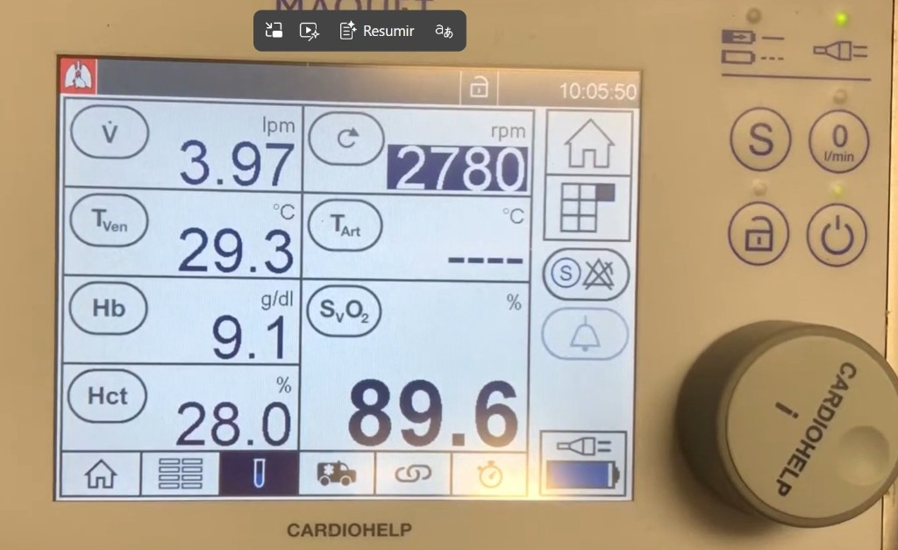
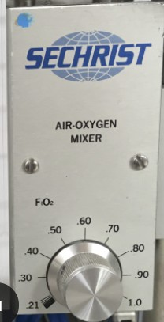
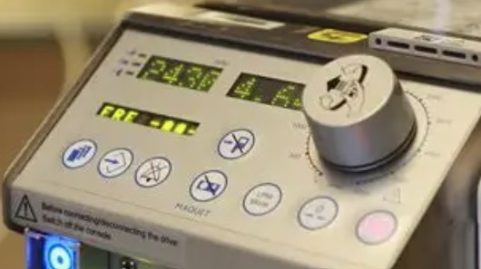
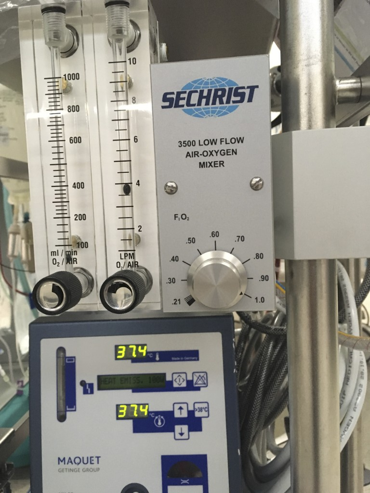

Guía operativa de ECMO VV
para Medicina Intensiva
Manual esquemático de bolsillo para el ajuste y destete de la oxigenación con membrana extracorpórea venovenosa. Reorganiza el protocolo local en bloques de decisión rápidos.
Mapa de control del ECMO VV
Dos circuitos de control independientes: la oxigenación depende del flujo de sangre por la membrana; la ventilación / depuración de CO₂ depende del flujo de gas (sweep).
Oxigenación (PaO₂)
Flujo de sangre
Aumento de RPM → ↑ flujo de drenaje → ↑ oxigenación.
Ventilación (CO₂)
Flujo de gas (sweep)
↑ sweep → ↑ lavado de CO₂. Subida progresiva por riesgo de lavado rápido.
Diagrama de control
Qué mando ajusto y sobre qué variable actúa.
Oxigenación
Mandos
Mecanismo
Flujo sangre porla membrana
Efecto
↑ Oxigenación PaO₂ · PAFICO₂
Mandos
Mecanismo
Difusión CO₂ enoxigenador
Efecto
↓ PaCO₂ · ↑ pHFlujo objetivo y relación RPM–flujo
No puedes «calcular» las RPM como una cifra fija a priori: ajustas RPM para conseguir un flujo de sangre (L/min) que represente aproximadamente el 60–80 % del gasto cardíaco del paciente, siempre limitado por la presión de entrada (succión) y las cánulas.
Relación RPM – flujo
La consola en tiempo real
La consola muestra RPM y flujo en tiempo real: más RPM → más flujo, pero el flujo real depende de la precarga (llenado venoso) y las resistencias del circuito, no solo de RPM.
Límites clínicos
Bombas centrífugas en adulto
En general permiten hasta ≈ 4.000–5.000 RPM para flujos de hasta 7–8 L/min, pero en clínica ajustas RPM para alcanzar el flujo que necesitas, vigilando que la presión de entrada (P1) no sea más negativa que −50 / −60 mmHg para evitar colapso y hemólisis.
Qué fracción del GC debe aportar el ECMO VV
Como objetivo general, se recomienda que el flujo de ECMO VV esté alrededor del 60–80 % del gasto cardíaco para conseguir buena corrección de la hipoxemia en SDRA grave.
Por debajo del 60 %, la PaO₂ arterial puede seguir siendo baja aunque el ECMO funcione bien (postmembrana excelente), porque una parte grande del GC pasa por el pulmón nativo enfermo y nunca toca la membrana.
Flujo objetivo ECMO VV
QECMO,obj = (0,60 – 0,80) × GC
Ejemplo: GC = 6 L/min → QECMO,obj ≈ 3,6–4,8 L/min (ideal ≥ 0,6 × GC → ≈ 3,6–4,5 L/min según situación clínica).
Gasto cardíaco estimado del paciente
Fracción mínima del GC (objetivo inferior)
Fracción máxima del GC (objetivo superior)
Flujo ECMO actual en consola (opcional)
Introduce el GC para calcular el rango objetivo
Fracción del gasto cardíaco aportada por el ECMO
Ajusta RPM hasta alcanzar QECMO,obj, sin superar P1 −50 / −60 mmHg. Por debajo del 60 % del GC la PaO₂ puede seguir siendo insuficiente.
Algoritmo práctico de ajuste
Calcula el objetivo de flujo ECMO y sube RPM hasta alcanzarlo, respetando P1.
-
Estima el gasto cardíaco (GC) del paciente y calcula el flujo objetivo: ≥ 0,6 × GC (rango habitual 60–80 %).
-
Sube RPM de forma progresiva hasta que alcances ese flujo objetivo en consola o la P1 se acerque a −50 / −60 mmHg.
-
Si más RPM hace la P1 excesivamente negativa, no fuerces: corrige antes precarga, posición de cánulas o recirculación.
Las RPM son solo el medio para llegar al flujo que necesitas (≈ 60–80 % del GC); tu límite real es la succión venosa (P1) y la mecánica del circuito.
Flujo de sangre como control de oxigenación

Lectura en consola Cardiohelp: caudal, Hb/Hto y SvO₂ para seguir el balance de oxigenación del circuito (imagen de referencia, valores orientativos).
FiO₂ del respirador
Fracción de oxígeno del ventilador. En VV la oxigenación la marca sobre todo el circuito ECMO; el respirador debe aportar el mínimo O₂ compatible con protección pulmonar.
- Objetivo < 40 % cuando sea posible. Subirla solo en último lugar, si con FiO₂ ECMO al 100% y RPM adecuados persiste hipoxemia.
Flujo de sangre / RPM
Aumento de RPM → ↑ flujo de drenaje → ↑ oxigenación.
Subir RPM hasta que la presión de drenaje P1 alcance ≈ -50 mmHg. Presiones más negativas implican riesgo de hemólisis.
Flujo variable según cánula y volemia del paciente.
Orden de ajuste para mejorar oxigenación

Ajustar el blender hasta FiO₂ 1,0 (100 %) en el gas que alimenta la membrana antes de subir flujo sanguíneo o tocar el respirador.

Subir RPM para aumentar el flujo de sangre por el oxigenador, vigilando la presión de drenaje P1 (objetivo ≈ −50 mmHg).
Precaución hemólisis: no forzar RPM si P1 es más negativa de −50 mmHg. Reevaluar volemia y posición de cánula antes de seguir subiendo flujo.
Último parámetro a subir. Objetivo mantenerla < 40 % siempre que sea posible.
Flujo de gas (sweep) como control de CO₂

Mandos habituales en mesa de gas: FiO₂ en el mezclador aire-O₂, caudal de sweep en los rotámetros (L/min o ml/min según escala) y temperatura del circuito en la unidad calefactora (imagen de referencia).
Principio
El flujo de gas a través de la membrana debe ser mayor que el gasto cardíaco (flujo de gas de lavado).
Sistema muy eficiente: existe riesgo de lavado rápido de CO₂ con vasoconstricción masiva si se sube bruscamente.
Subida progresiva
- Iniciar con 1-2 L/min.
- GSA progresivas cada 10-15 min.
- Según pCO₂ y pH, subir sweep y bajar simultáneamente Vt y FR del respirador.
Algoritmo por objetivos
PaO₂ baja / PAFI < 200
Actuar sobre el circuito de oxigenación, en orden.
- Comprobar FiO₂ ECMO = 100%Confirmar mezclador y fuente de O₂.
- Subir RPMAumentar flujo sangre; vigilar P1 ≥ −50 mmHg.
- Subir FiO₂ respiradorSolo si lo anterior no es suficiente. Objetivo recuperar < 40 % cuando se pueda.
pCO₂ alta · pH bajo
Actuar sobre el sweep, de forma progresiva.
- Subir sweep gas progresivamenteDesde 1-2 L/min, en escalones según GSA cada 10-15 min.
- Bajar Vt y FR del respiradorDe forma simultánea, manteniendo ventilación protectora (ver sección 3).
- Evitar lavado brusco de CO₂Riesgo de vasoconstricción masiva con subidas rápidas.
Parámetros del respirador en ECMO VV
Mientras el oxigenador asume el intercambio gaseoso, la ventilación mecánica se reduce a niveles protectores / ultraprotectores.
Parámetros a programar
Parámetros a vigilar
Modo y volúmenes
| Etapa | Modo | Vt | Notas |
|---|---|---|---|
| 1ª línea | Volumen control (VC) | VPP 4-6 ml/kg o Ultraprotectora < 3 ml/kg | Permite control estricto de Vt y Pplateau. |
| Posterior | Presión soporte (PSop) | — | Valorar paso a PSop cuando proceda. |
Recuerda el orden de oxigenación: FiO₂ ECMO 100% → RPM ECMO → FiO₂ del respirador (último en subir).
Perfusión de HNF y objetivos
Perfusión de heparina (HNF)
Mantener TCA 160-180 s y TTPA 1,5-2 × el basal.
Ajustar perfusión según controles seriados de coagulación y juicio clínico.
Hematimetría
- Hto > 30 %.
- Plaquetas > 100.000.
Transfusión según protocolo de UCI / centro.
Atención en flujos bajos. Con flujos inferiores a 1,5 L/min se requiere TCA > 200 s para minimizar el riesgo trombótico del circuito (ver sección de retirada).
Cuándo y cómo desconectar la ECMO VV
Iniciar cuando la causa que indicó la ECMO V-V ha mejorado o está resuelta.
1. Criterios de mejoría
- Mejoría radiológica.
- PAFI > 200 mmHg con FiO₂ ECMO < 50 %.
- Tª < 38 ºC.
- Mejoría de complianza pulmonar y Pplateau.
2. Objetivo durante el destete
- A medida que retiramos ECMO, aumentamos la VM.
- Atención a la anticoagulación: con flujos < 1,5 L/min, mantener TCA > 200 s.
3. Parámetros del respirador para desconexión
4. Secuencia de desconexión
Tres acciones en serie; entre cada una, GSA de control a las 2 h del cambio anterior.
Disminuir el flujo de gas (sweep) en 0,5 L/min.
Nueva gasometría a las 2 h del paso 1.
Disminuir la fracción de O₂ del oxigenador (mezclador / blender según equipo).
Nueva gasometría a las 2 h del paso 2.
Bajar sweep al mínimo (1-1,5 L/min); aumentar Vt y FR en el respirador y mantener 24 h antes de valorar desconexión definitiva.
Criterios para desconectar a las 24 h: PAFI > 200 mmHg · FiO₂ ECMO < 30 % · Tª < 38 ºC · mejoría radiológica. Si se cumplen → desconexión de ECMO.
Lista operativa de comprobación
Repaso rápido por turno o tras ajustes mayores.